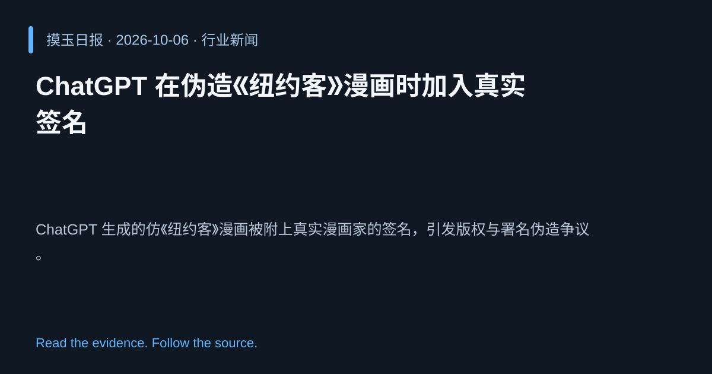

2026-10-06 · Asia/Shanghai · 行业新闻 · #1
ChatGPT 在伪造《纽约客》漫画时加入真实签名
ChatGPT is adding real cartoonists' signatures to fake New Yorker cartoons
ChatGPT 生成的仿《纽约客》漫画被附上真实漫画家的签名，引发版权与署名伪造争议。
为什么值得关注
提醒生成式 AI 在艺术创作中的伦理风险，影响出版业的信任体系。
- AI 生成内容带有真实艺术家签名，构成冒名。
- 涉及版权侵权和署名欺诈问题。
- 促使平台需强化生成内容的来源监管。

热度 73.0 / 100；排名与评分保留该期记录。